3
Working with CLIPS
This chapter includes the following topics that will help you get started with CLIPS:
- CLIPS workflow
- Managing xrun Files
- Managing Virtuoso Directories
- Managing Instance Hierarchies and Bindings
- Configuring Settings and Options
- Netlisting the Virtuoso Config or Schematic Views
- Performing a Binding Check
- Viewing the Netlist Output
- Accessing Logs
CLIPS workflow
The following figure explains the sequence of steps to be followed in CLIPS.
Managing xrun Files
CLIPS internally executes the xrun command to run simulations using Xcelium. You can specify the design files, input files and the command-line options in the argument files that are used by the xrun command. You can manage these xrun argument files in the 'Use Existing xrun Files' section of the CLIPS window.The following figure shows the Use Existing xrun Files section, which can be used to manage the xrun files in CLIPS:
The table given below describes the command buttons available in this section:
When you add or remove an xrun script file, CLIPS prompts you to update the hierarchy. Click Update  on the toolbar to update the hierarchy. An elaboration runs in the background, if needed, to generate the latest hierarchy structure of the SoC simulation setup. The Update command also checks the time stamp of the existing
on the toolbar to update the hierarchy. An elaboration runs in the background, if needed, to generate the latest hierarchy structure of the SoC simulation setup. The Update command also checks the time stamp of the existing xrunArgs files and re-runs the elaboration.
Managing Virtuoso Directories
If you have used Virtuoso to define analog or mixed-signal IP blocks corresponding to the digital blocks in your design, you can override the digital blocks with the blocks from Virtuoso. These overridden blocks are then used to created netlists that contain a mixed-signal representation of the complete hierarchy. The Virtuoso Directories section in the CLIPS window is used to specify the location of the directories that contain the Virtuoso library files, cds.lib. These cds.lib files contain the paths to the libraries where design files are saved. When you specify a Virtuoso directory, CLIPS uses a nickname in the <Virtuoso directory nickname>:<library>/<cell>/<view> format to identify that directory.
The following figure shows the Virtuoso Directories section that you can use to manage Virtuoso directories in CLIPS.
The table given below describes the command buttons available in this section:
CLIPS searches the specified Virtuoso directories to look for the Virtuoso config files that can override the corresponding digital block in your design. By default, all the directories specified in the Virtuoso Directories section can be searched for config files. This is indicated by the * symbol shown in the Libraries column of this section. However, you can choose the libraries to be searched while finding the schematic or config files that can be overridden, that is, switchable IP configurations. Other Virtuoso directories are excluded from the search. This helps improve the searching and matching performance.
To select the libraries to be searched, perform the following steps:
-
Double-click the Libraries column in the Virtuoso Directories section.
The Edit <Library_name> Library List form appears.
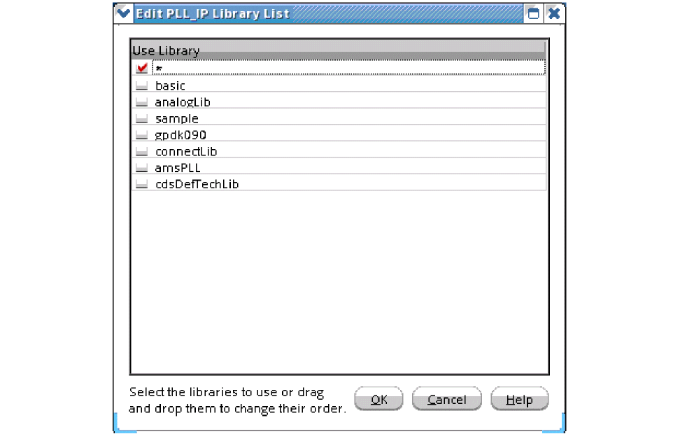 -
Select the check box next to the libraries you want to use in search.
Alternatively, you can drag and drop the library names in this list to specify the search order. -
Click OK to close the form.
ThexrunArgsfiles are elaborated and the digital hierarchy is represented in a tree in the Hierarchy section.
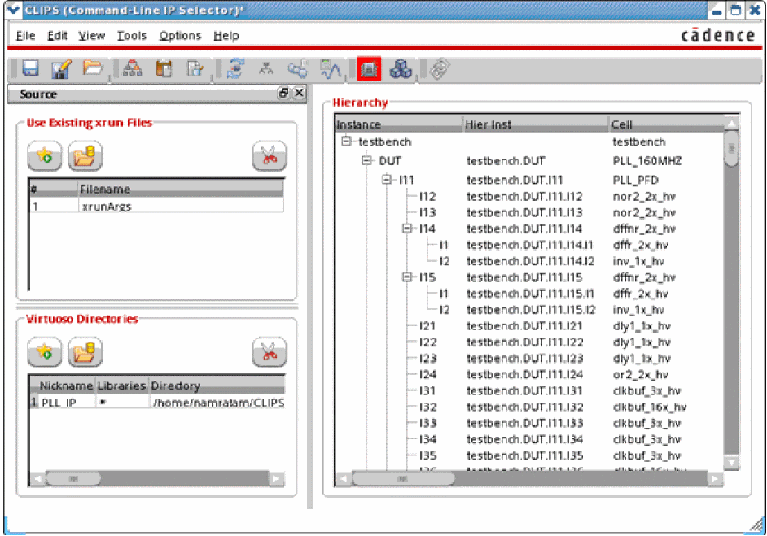
Managing Instance Hierarchies and Bindings
In the Hierarchy section, you can switch or override the cellview bindings for selected blocks or cells to use config or schematic views from Virtuoso instead of the text cellviews (current bindings). If you switch the binding for a cellview to use a config or schematic view, you also need to either associate that cell with an ADE state, which provides the information required for netlisting, or directly add model files.
The following topics provide more details:
- Controlling the Hierarchy View
- Overriding or Switching Instance Bindings
- Associating an Instance with an ADE State
Controlling the Hierarchy View
For a large design hierarchy, you might need to scroll to look for a specific cell or view. Instead, you can use the controls provided in the Hierarchy section to view the design components of interest.
To access the controls, select View – Hierarchy Controls.
The Controls group box is displayed in the Hierarchy section. You can use the controls in this box to do the following:
- Search for a specific instance, or cells or bindings. For this, you can type in the search box.
- Limit the view to display only instance or cells or bindings. For this, you can the select the corresponding check box.
-
Expand the instances in the hierarchy to higher levels to get a more detailed tree structure. For this you can select the value from the drop-down list box, as shown in the figure below.
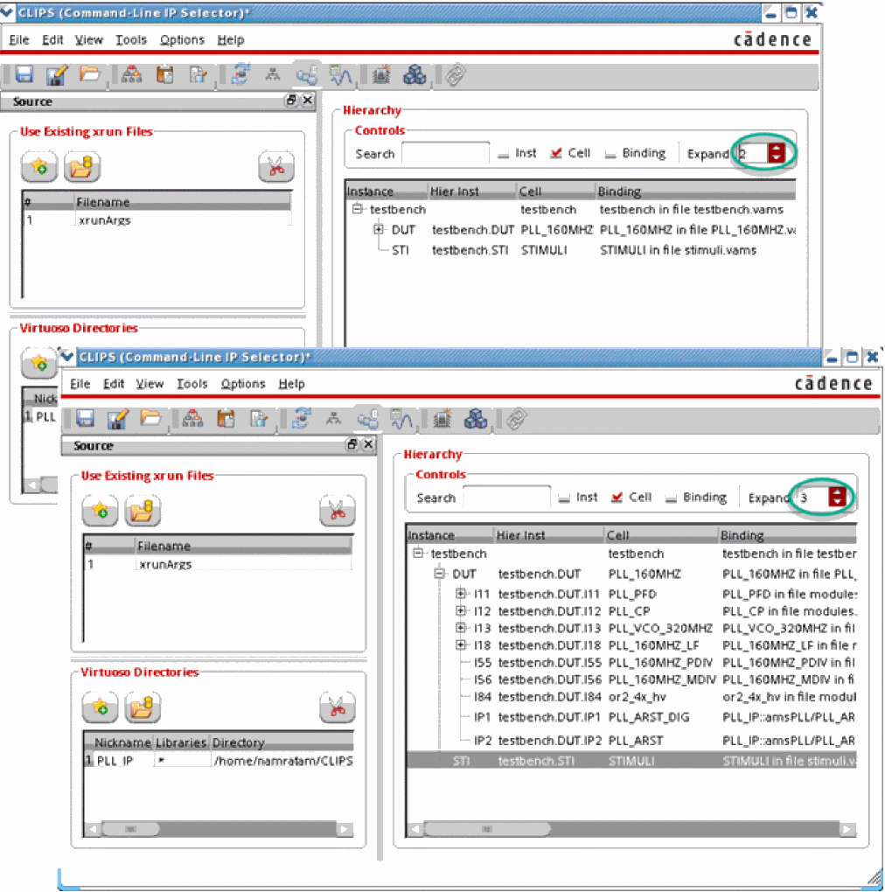
Overriding or Switching Instance Bindings
- Add xrun files in the Use Existing xrun Files section.
- Add Virtuoso directories in the Virtuoso Directories section.
-
Click Update
 on the toolbar to update the hierarchy after adding all the
on the toolbar to update the hierarchy after adding all the xrunscripts and Virtuoso directories.
CLIPS elaborates the design to identify the Virtuoso cellviews available for the cells listed in the Cell column.
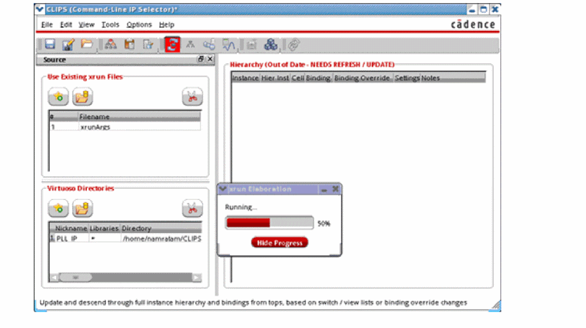
Only Virtuoso cellviews for which either of the following conditions is satisfied are displayed in the Binding Override column:- a config view is available and the design sub-top (schematic or text) cell name is the same as the cell or block name
- a schematic view is available and the cell name is the same as the cell or block name
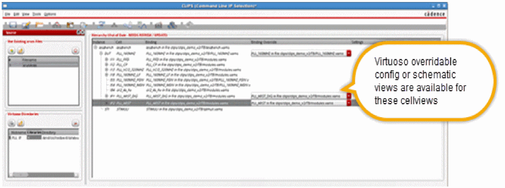If the original text cellview is used for a cell, the drop-down list in the Binding Override column continues to show the directory path to that text view. If you override the cellview binding to use a Virtuoso config or schematic view instead of the text cellview, the drop-down list shows the name of the corresponding library, cell, and config or schematic view.You can find all the Virtuoso config or schematic views whose schematic DUT name matches the module name of digital text file by selecting Enable Searching Mismatched DUT Name in the Options menu.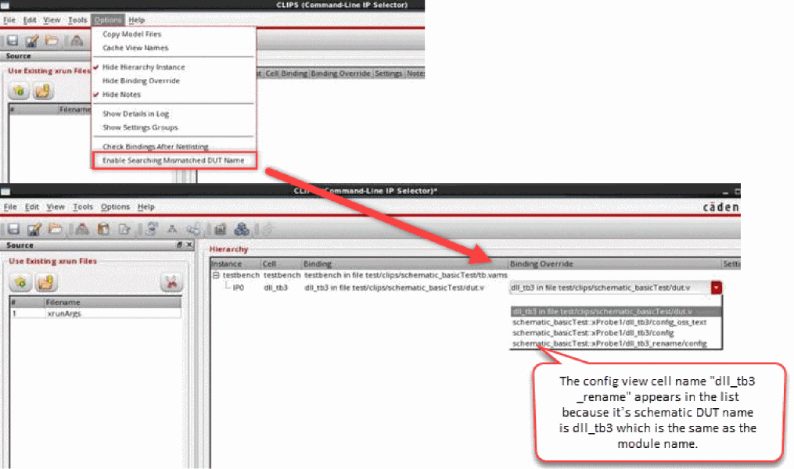For a large design, if you need to scroll down to view the details of all instances and cells, you can click the Smart Hierarchy Tree button 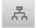 on the toolbar to collapse all instances other than the ones for which switchable bindings are available. This makes it more convenient to locate switchable bindings in a large design with a long hierarchy tree. -
For each cell for which you need to override the cellview binding, select the config or schematic cellview name from the drop-down list in the Binding Override column.
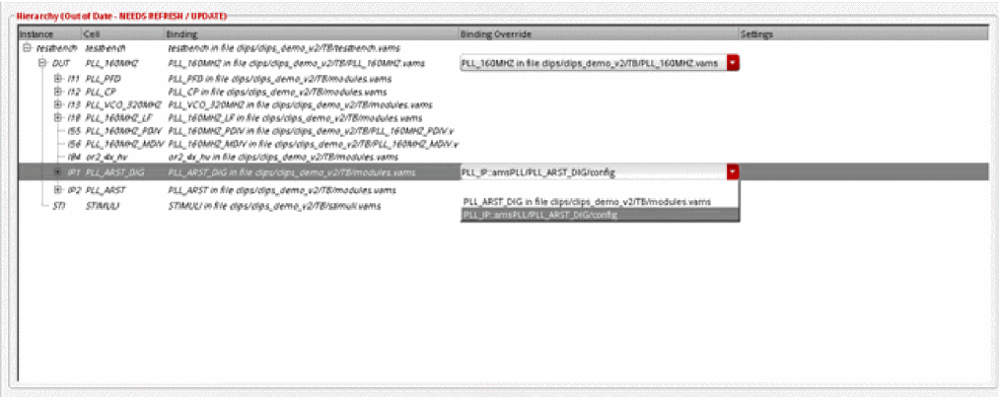
After overriding the instance, the next step is Associating an Instance with an ADE State. And then you have to Add or edit model files in CLIPS.
Associating an Instance with an ADE State
If you switch the original binding of an instance with a Virtuoso config or schematic view, you need to associate the instance with an ADE state for providing the information required for the netlisting. However, in case the ADE state provides only model files for netlisting and simulation, you can directly add the model files in CLIPS.
To associate an instance with an ADE state:
-
Right-click the row of the instance for which you have overridden the binding and choose Add/Edit ADE Cellview.
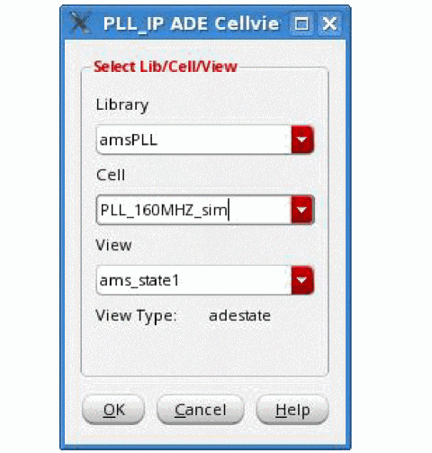
- In the View drop-down list, select the name of the ADE state to be associated with the instance and click OK.
-
Click Update
 on the toolbar to update the hierarchy.
on the toolbar to update the hierarchy.
Add or edit model files in CLIPS
-
Choose Tools – Setup Model Files. The Add/Edit Model Files form appears.
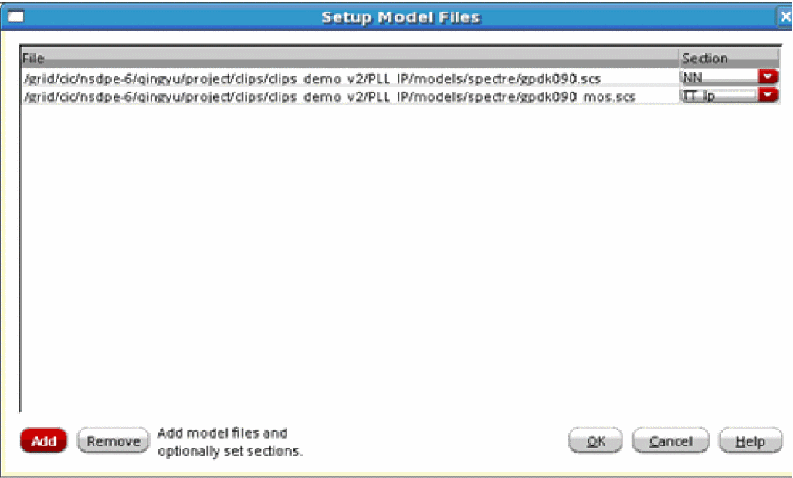In this form, - Click OK.
Configuring Settings and Options
By default, all the instances in the hierarchy table inherit the global design settings, such as model files, design information, and netlisting options. If required, you can specify different values to these settings for one or more hierarchical instances. For that, you need to create a group that contains one or more hierarchical instances, and then, specify settings for the group.In addition to the design settings mentioned above, you can define options to specify the pre-processing and post-processing options for a CLIPS run and directories to be used. The following sections provide details about how to configure these settings and options:
Creating Groups
To create a group to include specific hierarchical instances, perform the following steps:
-
Choose View — Show/Hide Settings to open the Settings and Options form.
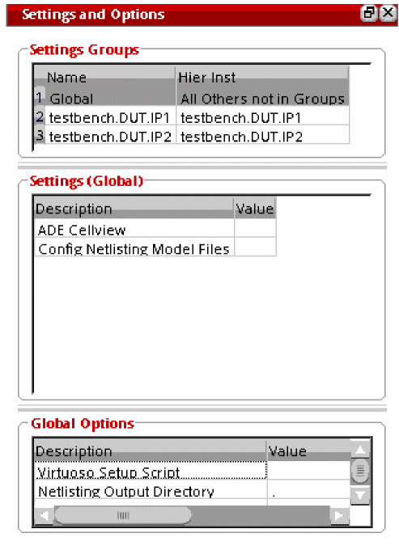The available groups are displayed in the Settings Groups section.
- To create a new group, right-click in the Settings and Groups section and choose Add Settings Group from the context-sensitive menu. The Add instances to Settings Group form is displayed.
- Specify a name for the new group in the Select or Enter Settings Group Name field.
-
Click OK to close the form.
A new group is displayed in the Settings Groups section.
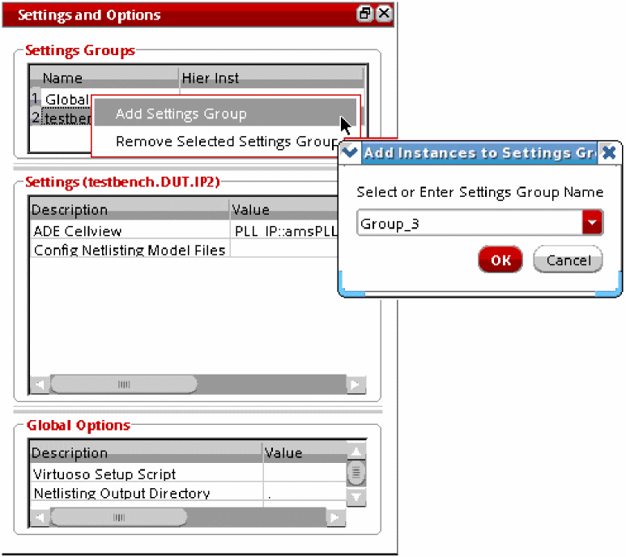 -
To add an instance to this group, right-click an instance in the Hierarchy sections of the CLIPS window and choose Add Selected Instances to the Settings Group.
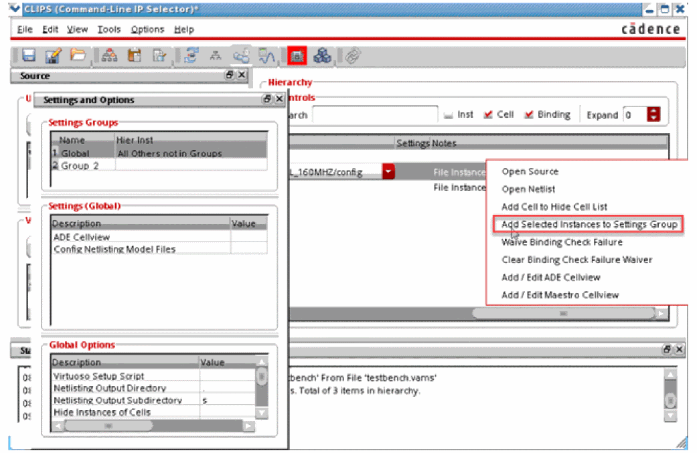The Add Instances to Settings Group form is displayed.
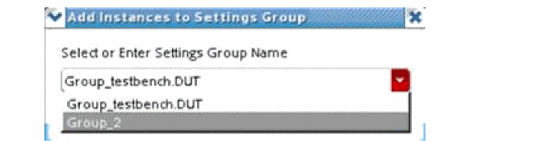 -
In the Select or Enter Settings Group Name drop-down list, select the name of the group to which you want to add the instance.
The instance name is displayed in the Hier Inst column of the Settings Groups section, as shown below.
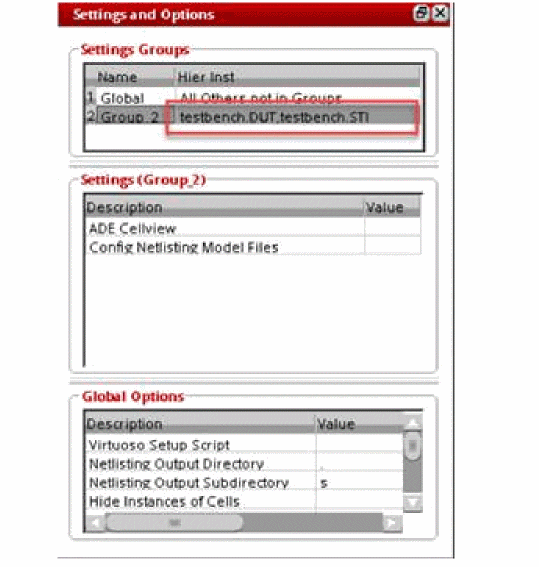
Applying Settings to Specific Groups
Settings specified for the Global group are applied to all the instances that are not a part of any other group.
To apply different settings to some specific instances, perform the following steps:
-
In the Settings Groups section, select the group name that contains the hierarchical instances for which you need to modify the settings. The properties of the selected groups are shown in the Settings (<group-name>) section.
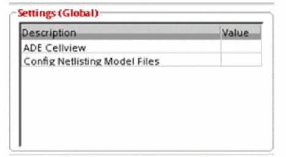 - Double-click the Value cell corresponding to the setting you want to modify.
-
Enter the value to the form that is displayed.Different forms are displayed to specify the ADE cellview or model files. For ADE cellviews, the <inst-name> ADE Cellview for Selected Instances form is displayed, as shown below.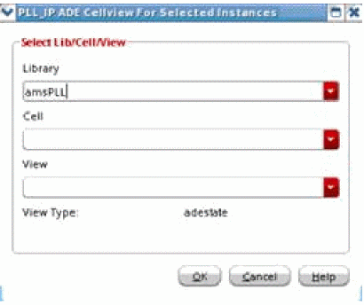For Config Netlisting Model files, the Setup Model form is displayed, as shown below.
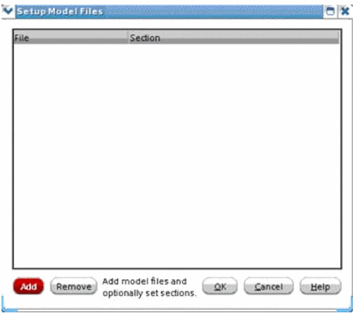
Configuring Global Options
In the Global Options section on the Settings and Options form, you can specify the global pre- and post-processing options for simulations and the directories to be used for simulation runs.
The options you can configure in this section are listed below.
- Virtuoso Setup Script: Path to the UNIX script to set up Virtuoso Environment Variables.
- Netlisting Output Directory: Name of the output directory.
- Netlisting Output Subdirectory: Name of the subdirectory inside the output directory where the netlist is saved.
- Hide Instances of Cells: List of cellnames for which instances are hidden from the hierarchy.
- Batch Pre-Netlist Command: UNIX command to run before generating a netlist in the batch mode.
- Batch Post-Netlist Command: UNIX command to run after generating a netlist in batch mode. This command is always run, irrespective of the pass or fail status of netlist creation.
- Batch Post-Netlist Pass Command: UNIX command to run after successful creation of a netlist in batch mode.
- Batch Post-Nestlist Fail Command: UNIX command to run after creation of a netlist fails in the batch mode.
-
Liblist in the Verilog2001 Configuration File: A new or modified list of libraries. If this field is empty, the default library list,
worklibis used.
Netlisting the Virtuoso Config or Schematic Views
Once you have updated the hierarchy after switching the instance bindings, click Netlist on the toolbar to netlist the Virtuoso config or schematic views.
It generates an incremental file, clips.f, along with the other necessary files.
When netlisting completes, messages are displayed in the terminal, as shown below:
Performing a Binding Check
Mostly, the top-level bindings (outside the IP block) are the native bindings by the Verilog language, which means that while searching for Virtuoso cellviews, it follows the search order set in the Xcelium simulation. This kind of native binding gets changed during a binding switch because new libraries are introduced.
Therefore, it is highly recommended to check whether the switched bindings are correctly used by the elaborator before running the post-CLIPS simulation. The existing bindings for all the remaining instances must remain intact.
To perform a binding check, follow the steps:
-
Click Check Bindings 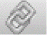
on the toolbar.
The pre-CLIPS and post-CLIPS elaboration results are compared, and any mismatch found is highlighted. The correct bindings are highlighted in green. If an incorrect binding is found, it is highlighted in red.
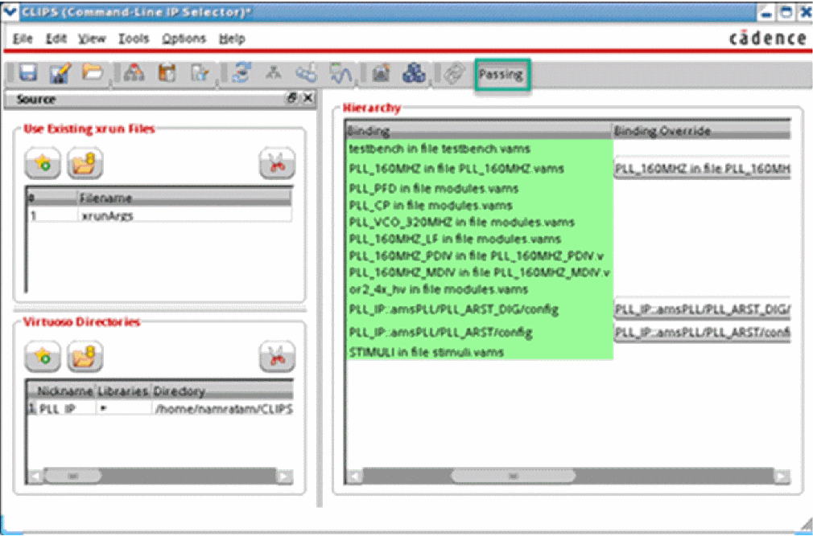The result of binding check is displayed in the toolbar, where “Passing” indicates that correct bindings are confirmed.
Viewing the Netlist Output
By default, all switched config or schematic views are netlisted in the ./CLIPSOUTPUT directory.
-
To view the contents of this directory, click View Output 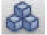
on the toolbar. The directory structure is displayed in the Netlist Output window, as shown below.
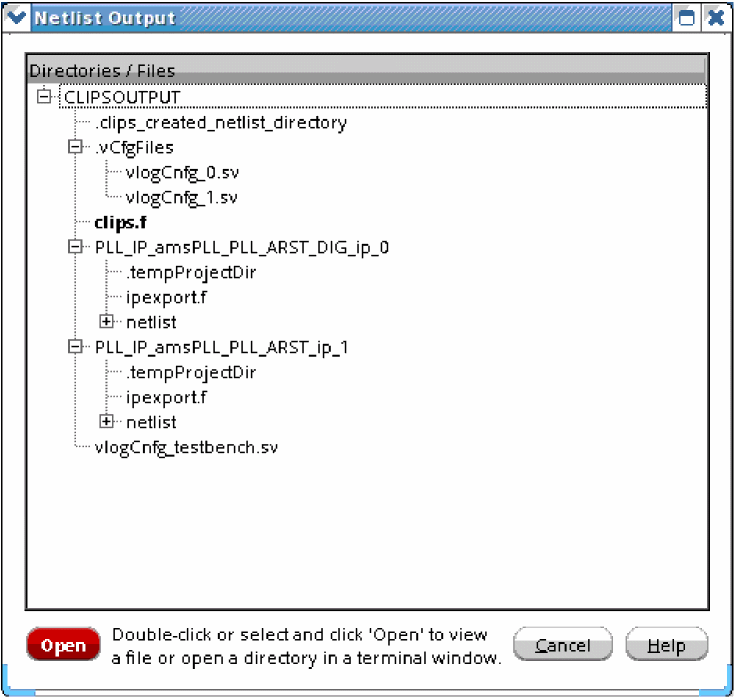In this window,
-
To view the list of contents of this directory on the command line, enter the following command in the terminal:
% ls ./CLIPSOUTPUT/
In the CLIPSOUTPUT directory, separate directories are generated for all the config or schematic views bound to any of the instances. The clips.f file, which contains information about all the Virtuoso configurations, is also placed in this directory.
The following example shows the content available in the clips.f file:
# 'PLL_IP::amsPLL/PLL_ARST_DIG/config' first used for 'testbench.DUT.IP1'
-f /grid/cic/nsdpe-6/qingyu/project/clips/clips_demo_v2/TB/CLIPSOUTPUT/PLL_IP_amsPLL_PLL_ARST_DIG_ip_0/ipexport.f
# 'PLL_IP::amsPLL/PLL_ARST/config' first used for 'testbench.DUT.IP2'
-f /grid/cic/nsdpe-6/qingyu/project/clips/clips_demo_v2/TB/CLIPSOUTPUT/PLL_IP_amsPLL_PLL_ARST_ip_1/ipexport.f
-top vlogCnfg_testbench
/grid/cic/nsdpe-6/qingyu/project/clips/clips_demo_v2/TB/CLIPSOUTPUT/vlogCnfg_testbench.sv
-compcnfg
Additionally, a SystemVerilog configuration file, vlogCnfg_testbench.sv, is generated to bind all the configurations under the top-level testbench.
config vlogCnfg_testbench;
design testbench;
default liblist worklib;
//verilog 2001 binding for this IP
cell PLL_ARST_DIG use cds_amsconfiglib.PLL_ARST_DIG:ip_0;
cell PLL_ARST use cds_amsconfiglib.PLL_ARST:ip_1;
endconfig
In each Virtuoso configuration directory, the config or schematic view is netlisted in the same way as it is netlisted in the UNL flow. However, it is better packaged with an ipexport.f file, which contains the details of the Virtuoso config or schematic view netlisted by CLIPS.
Accessing Logs
CLIPS logs show useful information about everything happening in the current session.
You can show and hide the log area of CLIPS.
To view the log pane, do one of the following
To capture the log files and intermediate files in a specified directory, perform the following steps:
-
Set the environment variable
CLIPS_DEBUG="dbg". -
Create a local directory. For example, create a directory
local_tmpusing the command:
mkdir local_tmp
-tmpworkpath ./local_tmp
Return to top